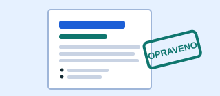

Redakce školního časopisu
Dokumentová záchranka
Redakce nestíhá vydat časopis. Články mají rozbité nadpisy, seznamy, zarovnání, obrázky i mezery. Jako redaktor je opravíš ve skutečném editoru – a kontrola ti řekne, co už sedí a co ještě ne.
- Co se naučíš: styly nadpisů, zvýraznění, seznamy, zarovnání, obrázky s popiskem a české typografické mezery.
- Čas: 10 misí, každá 2–5 minut (celkem 20–30 min). Bez časového limitu.
- Ovládání: myš i klávesnice (Ctrl+B/I/U, Ctrl+Z/Y, Alt+Shift+↑/↓ přesune odstavec).

Na telefonu hra funguje, ale s myší a klávesnicí na počítači se pracuje pohodlněji.
Tvůj postup
Postup se ukládá jen v tomto prohlížeči na tomto počítači. Nikam se neodesílá.